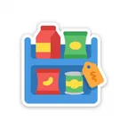
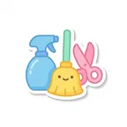

정책자금은 정부 재원으로 금리를 낮춘 대출입니다. 같은 조건이라면 시중 사업자 신용대출보다 통상 수 %p 낮습니다. 아래 표는 공시 자료 기준의 대략적인 비교이며, 실제 금리는 신용도·담보·시점에 따라 달라집니다.
| 구분 | 대표 상품 | 금리 수준(연) | 비고 |
|---|---|---|---|
| 정책자금(직접·대리대출) | 소진공 정책자금, 중진공 청년전용창업자금 | 약 2%대~3%대 | 기준금리 연동, 우대 시 추가 인하 |
| 보증부 은행대출 | 지역신보 보증 + 은행 대출 | 약 4%대 내외 | 보증료 별도(연 0.5~1%대) |
| 시중은행 사업자 신용대출 | 은행별 개인사업자 신용대출 | 약 4%대~7%대 | 은행연합회 공시 평균 기준 |
| 2금융권 사업자대출 | 저축은행·캐피탈 | 약 8%대 이상 | 급전 목적 외 권장하지 않음 |
※ 검수 전 참고용 수치입니다. 아래 공식 비교 서비스에서 실시간 조건을 확인하세요.
감당하기 어려운 채무는 법이 정한 절차로 정리할 수 있습니다. 부끄러운 일이 아니라 재기를 위해 국가가 만들어 둔 제도를 이용하는 것입니다. 상담은 아래 공공기관에서 무료로 시작할 수 있습니다.
정리를 결심했다면 이 순서로 확인하세요. 순서를 놓치면 돌려받거나 지원받을 것을 못 챙길 수 있습니다. (일반 안내이며 정확한 자격·금액은 각 기관 공고로 확인하세요.)
알아보려는 절차를 고르고 해당하는 항목을 선택하면, 채무자회생법 기준으로 유리·불리 요소와 참고 지표를 보여드립니다.
채무조정 → 개인회생 → 개인파산 순으로 부담이 커집니다. 새출발기금은 소상공인용 채무조정입니다.
| 제도 | 이런 분께 | 소득 요건 | 결과 | 무료 상담 |
|---|---|---|---|---|
| 채무조정 법원 밖 · 신복위/새출발기금 | 연체 초기·상환이 버거운 분 (금융권·사업자 채무) | 소득 있으면 유리 | 이자 감면·상환기간 연장 사업자는 원금 조정도 | 신복위 1600-5500 캠코 1660-1378 |
| 개인회생 법원 | 소득은 있으나 빚이 과다한 분 (무담보 10억·담보 15억 내) | 계속·반복 소득 필수 | 3~5년 갚고 나머지 탕감 | 법률구조공단 132 |
| 개인파산·면책 법원 | 갚을 능력이 사실상 없는 분 | 소득 없음·지급불능 | 재산 청산 후 면책 | 법률구조공단 132 |
전화 대표번호는 전국 공통이고, 대면 상담은 가까운 센터를 찾아 예약 후 방문하면 됩니다.
뽑으려는 자리를 고르면 그 일에 맞는 직무 체험 과제로 바로 넘어갑니다. 지원자는 5분 정도 걸리고, 결과는 등급 없이 항목별로만 나오며 어디에도 저장되지 않습니다.

판매·진열편의점 · 마트 · 소매점 이동·배송배달 · 운수 · 물류
정밀·반복청소 · 미용 · 농업축산 · 제조 카페·바리스타카페 · 디저트 · 베이커리 사무·전화 응대안내데스크 · 병원접수 · 콜센터 영상 편집유튜브 편집 · 릴스·쇼츠 · 촬영 편집